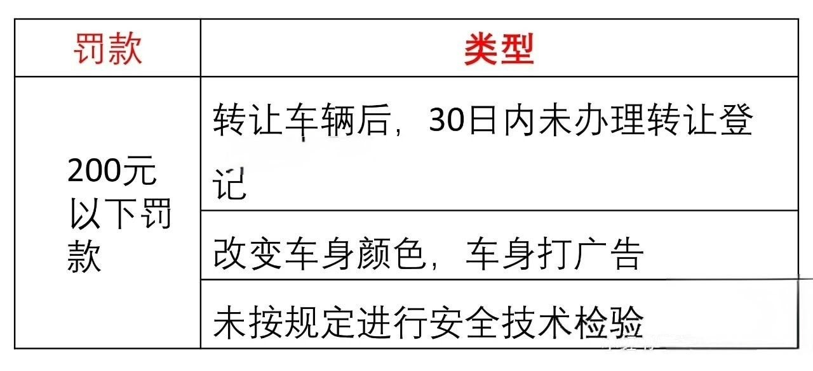
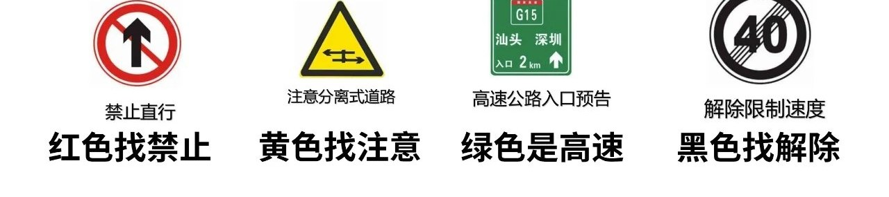
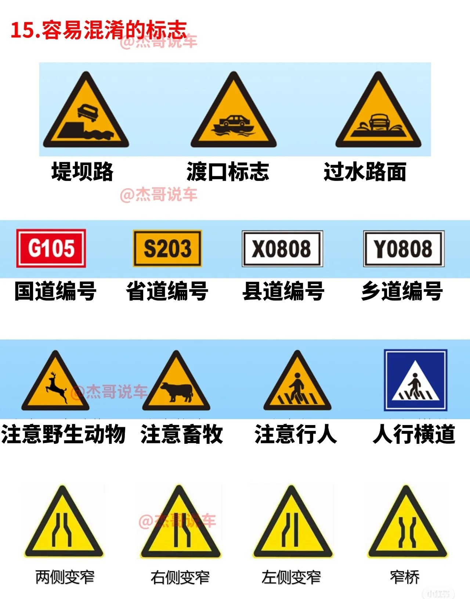
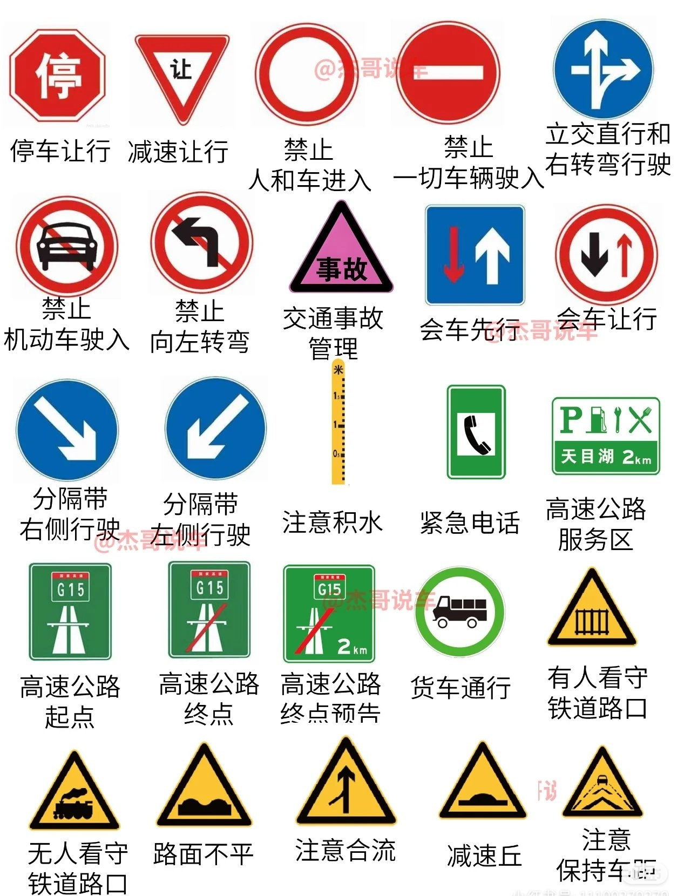
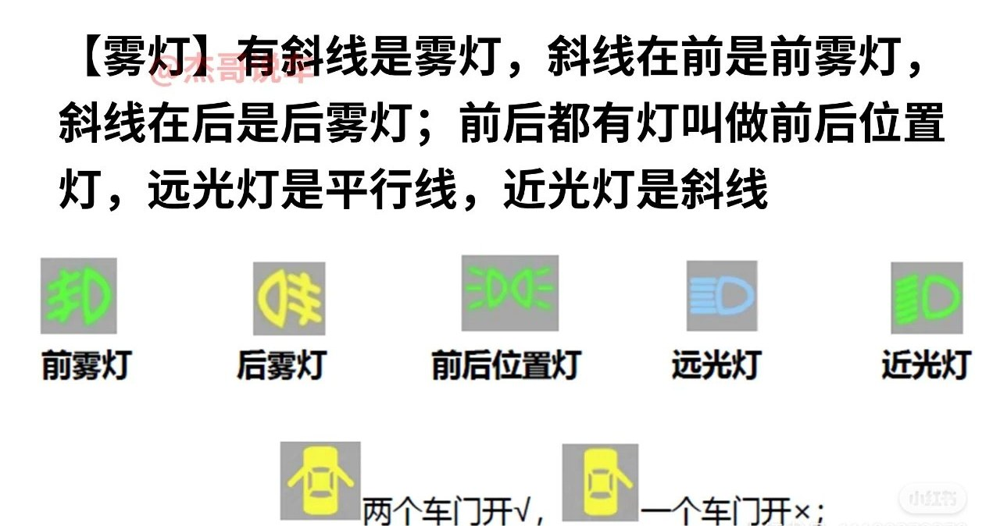
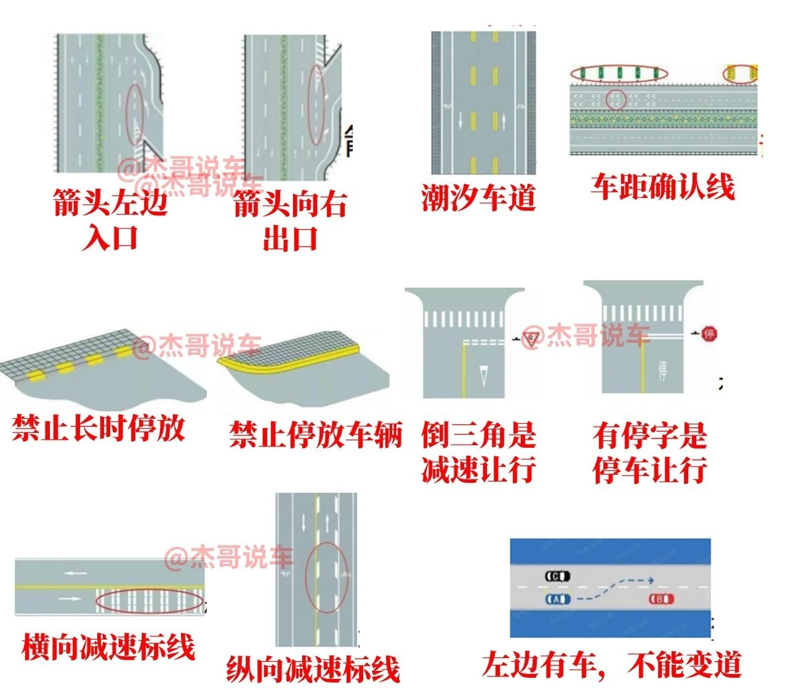

📖 口诀速记
科目一懒人速记 · 精选知识点一图流
22 条口诀 · 覆盖扣分 / 速度 / 罚款 / 标志 / 标线
🚫 处罚
📏 距离
🌫️ 能见度
📉 扣分
📅 时限
🏎️ 速度
💰 罚款
➕ 减分
🚦 标志
👮 手势
💡 灯光
🛣️ 标线
🚫 驾驶证申领限制
申领年限题
假一 · 吊二 · 撤三 · 醉五 · 逃终生
假一
：提供虚假材料申领 →
1 年
内不得报考
吊二
：被吊销驾驶证 →
2 年
内不得报考
撤三
：被撤销驾驶证 →
3 年
内不得报考
醉五
：醉驾被吊销 →
5 年
内不得报考
逃终生
：交通肇事逃逸 →
终生
不得考驾照
📏 距离题
停车距离题
口五 · 站三 · 没有就选 150
题干出现
「口」（路口）
→ 选
50 米
题干出现
「站」（公交站 / 加油站等）
→ 选
30 米
其余情况全选
150 米
；没有 150 的选最大
🌫️ 高速能见度
能见度车速车距题
261 · 145 · 52 离
261
：能见度
200
米 → 车速
60
、车距
100
145
：能见度
100
米 → 车速
40
、车距
50
52离
：能见度
50
米 → 车速
20
、尽快
驶离高速
📉 扣分口诀
扣 1 分
1灯 1会 1安全 · 1倒 1禁 1年检
1灯
：不按规定使用灯光
1会
：不按规定会车
1安全
：未系安全带
1倒
：普通道路不按规定倒车掉头（普通路倒车 1 分，
高速倒车 12 分
）
1禁
：违反禁令标志、禁止标线
1检
：未按规定年检
扣 3 分
主角说道让开 · 警告你 · 别装打电话 · 低等的劳民
道
：排队穿插变道 / 占用对向车道；高速不按车道行驶；普通道路逆行
让
：不让校车、不让行人、不让车辆
警
：车有故障不开危险报警灯
装
：不按规定安装机动车号牌
电
：开车打电话
低
：高速公路低于最低时速
劳
：载货汽车疲劳驾驶
扣 6 分
闯信号灯 · 需要「轻微（危）暂（占）」扣驾驶证
信
：违反信号灯（闯红灯）
轻
：轻微伤逃逸
危
：危险爆炸品运输车未挂警示标、进入限行区
占
：占用应急车道
扣
：驾驶证暂扣期间开车
扣 9 分
校车上有一大车的纸皮（疲），它没号牌不符合这里的停车规定
校车
：没有校车资格证开校车
大车疲
：载客汽车或危险品运输车疲劳驾驶
没号牌
：未悬挂或故意遮挡机动车号牌
不符
：驾驶准驾车型不符
停车
：高速路、城市快速路违法停车
扣 12 分
伪变分分钟要搞你（高逆）喝酒 · 快逃
伪变
：伪造变造号牌
分
：买卖分、替人接受处罚消分牟利
高逆
：高速公路逆行
酒
：饮酒驾驶；
醉驾直接吊销，5 年后才能申领
逃
：肇事逃逸轻伤以上或死亡（不构成犯罪的前提下）
易混淆扣分对比
号牌三分九十二 · 逃逸六和十二
号牌：未按规定安装
3 分
；未悬挂 / 故意遮挡 / 污损
9 分
；伪造或使用其他车号牌
12 分
逃逸不构成犯罪：轻微伤或财产损失
6 分
；轻伤以上 / 重伤 / 死亡
12 分
📅 驾驶证时限
时限题
实 1 · 61 长 · 考驾照 3 年
实习期
：1 年
驾驶证有效期
：6 年 → 10 年 → 长期
学习驾驶证明有效期
：3 年
🏎️ 速度题
城市 / 公路速度
城 35 · 公 47 · 复杂路段 30
城市道路：无中心线
30
km/h，有中心线
50
km/h
乡村公路：无中心线
40
km/h，有中心线
70
km/h
掉头、转弯、急转弯、窄路、窄桥、铁路、下坡、冰雪、泥泞 → 最高
30
km/h
高速车道速度
3 条道 110 / 90 / 60 · 2 条道 100 / 60
高速 3 条道：左
110-120
，中
90-110
，右
60-90
高速 2 条道：左
100-120
，右
60-90
💰 罚款题
罚款判断题
「以上」就是错的 · 「以下」就是对的
题目出现
「以上」
就是错的，出现
「以下」
就是对的
唯一例外：
200 元以上 500 元以下
是错的；其余出现「以下」都是对的

200 元以下罚款的三种情形
审验处罚
假审 1 · 代审 2 · 组 3 倍 · 高 2 万
假审 1
：审验学习记录弄虚作假 → 罚
1000
元
代审 2
：代替他人审验 → 罚
2000
元
组 3 倍 · 高 2 万
：组织他人审验有违法所得 → 罚违法所得
3 倍
以下，最高不超
2 万
元
➕ 学法减分
减分规则
公益 111 · 现场 112 · 网上 331
公益 111
：参加公益活动满
1
小时为 1 次，减
1
分
现场 112
：现场学习满
1
小时且考试合格，1 次减
2
分
网上 331
：
3
日内累计满
30
分钟，通过 1 次减
1
分
🚦 交通标志
标志颜色口诀
红禁止 · 黄注意 · 绿高速 · 黑解除
红色
找禁止，
黄色
找注意（警告），
绿色
是高速，
黑色
找解除

易混标志
堤坝有水 · 渡口上船 · 过水漫路 · 变窄看缺口
堤坝路
= 山旁有水 / 堤坝；
渡口
= 车开上船；
过水路面
= 水漫过路面
道路编号：
红底 G
国道 ·
黄底 S
省道 ·
白底 X
县道 ·
白底 Y
乡道
注意类：
鹿
= 注意野生动物，
牛
= 注意畜牧；黄底三角 = 注意行人，蓝底方形 = 人行横道
变窄看缺口：两边缺 =
两侧变窄
，缺右 = 右侧变窄，缺左 = 左侧变窄，
窄桥
= 中间窄两头宽

常见标志速查
有空多翻两遍 · 混个脸熟

👮 交警手势
手势信号
左高右放要叫停 · 左手下放要减速 · 右手在下右转弯
左高右放
要叫停（停止信号）
左手下放
要减速（减速慢行信号）
右手在下
右转弯、
左手在下
左转弯（转弯信号）
左手抬起
靠边停（示意车辆靠边停车信号）
左右折叠
是直行（直行信号）
左手下摆
即待转（左转弯待转信号）
右手平摆
要变道（变道信号）
💡 仪表灯光
灯光识别
有斜线是雾灯 · 斜线在前是前雾灯 · 远光平行线 · 近光是斜线
有
斜线
是雾灯：
斜线在前
= 前雾灯，
斜线在后
= 后雾灯
前后都有灯
= 前后位置灯
远光灯
是平行线，
近光灯
是斜线
车门图标：
两个车门开 ✓
、
一个车门开 ✕

仪表指示灯
红三角双闪 · 机油壶 · 圆圈叹号刹车 · 温度计开锅
红三角
= 危险报警灯（双闪）
机油壶
= 机油压力过低
圆圈叹号
= 制动系统异常；
(P)
= 驻车制动
温度计 + 波浪
= 发动机温度过高
电池
= 电路 / 充电系统故障；
小棍
= 刮水器；
拐弯箭头
= 除霜除雾
🛣️ 交通标线
标线口诀
菱形人行预告 · 倒三角减速让 · 有停字停车让
菱形
= 人行横道预告；
有箭头
= 导向车道线，
没箭头
= 可变导向车道线
倒三角
= 减速让行；有
「停」字
= 停车让行
横向减速
= 一排横向短线；
纵向减速
= 车道两侧菱形块虚线
路边
虚线边
= 禁止长时停放，
实线边
= 禁止停放车辆
箭头朝
左上
= 入口，箭头朝
右
= 出口

特殊车道
潮汐车道早晚换向 · 车距确认线量距离
潮汐车道
= 可根据早晚方向变换的车道
车距确认线
= 高速上确认与前车距离的横向白线
‹ 返回驾考通首页